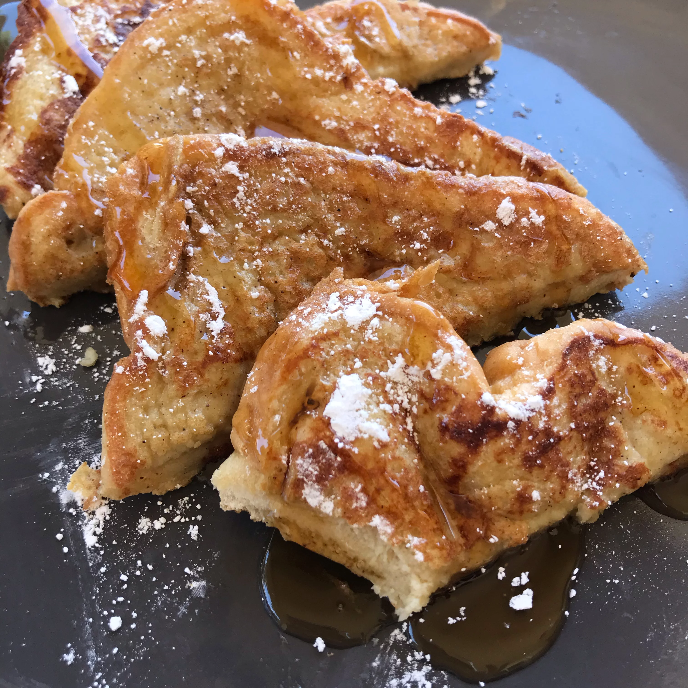

French toast

Description
A small twist on the classic French Toast by using flour!
Ingredients
-
1/4 cup all-purpose flour
-
1 cup milk
-
1 pinch salt
-
3 eggs
-
1/2 teaspoon ground cinnamon
-
1 teaspoon vanilla extract
-
1 tablespoon white sugar
-
12 thick sliced bread
Steps
-
Measure flour into a large mixing bowl. Slowly whisk in the milk. Whisk in the salt, eggs, cinnamon, vanilla extract and sugar until smooth.
-
Heat a lightly oiled griddle or frying pan over medium heat.
-
Soak bread slices in mixture until saturated. Cook bread on each side until golden brown. Serve hot.
Return Home